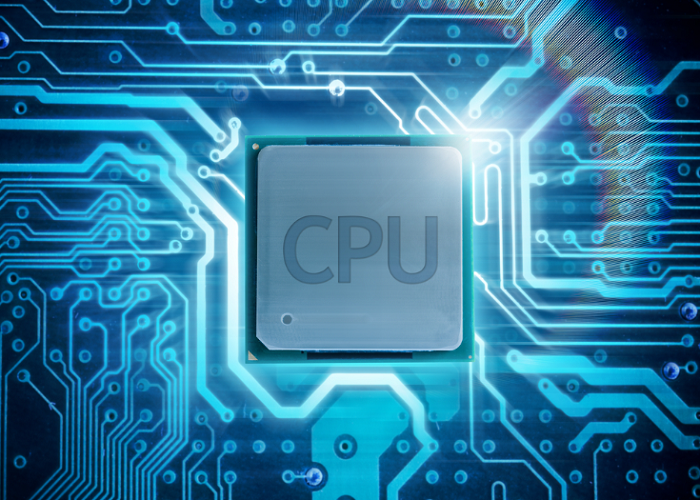
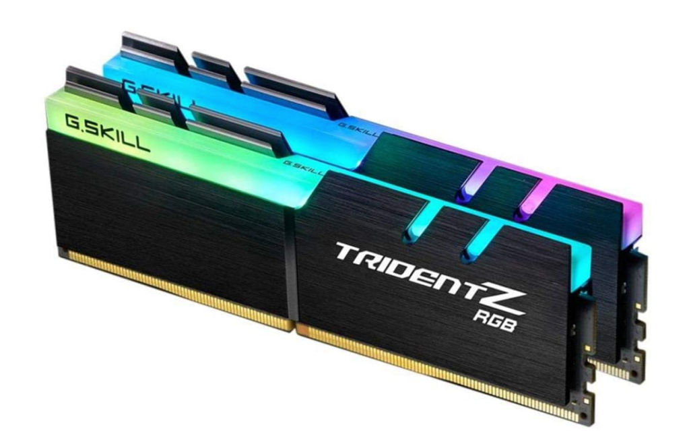
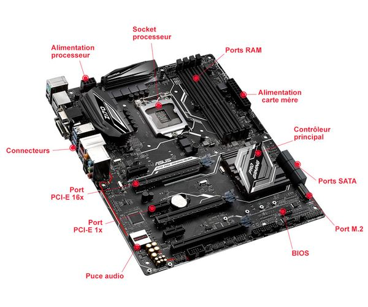
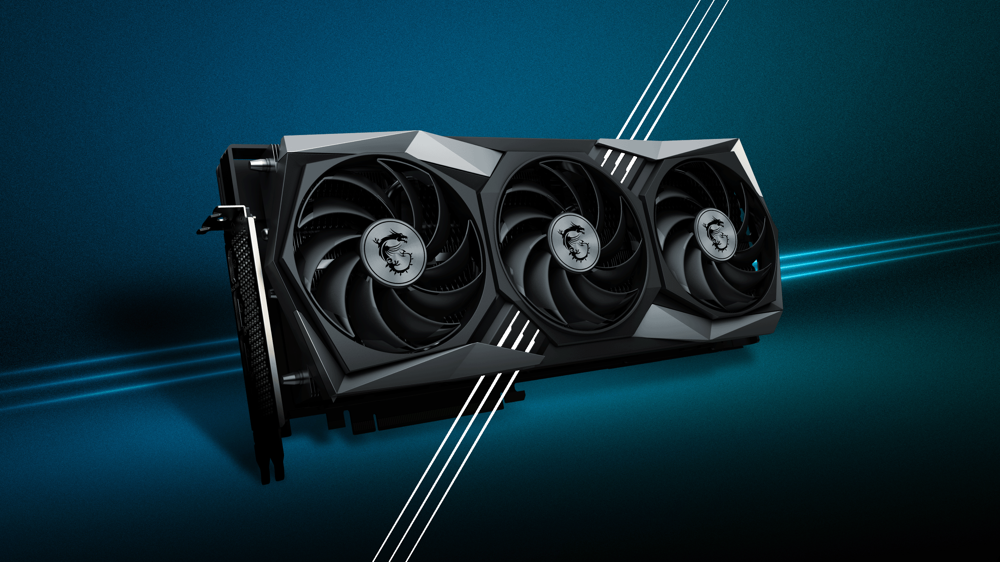
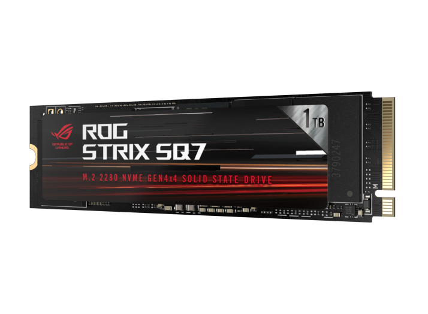
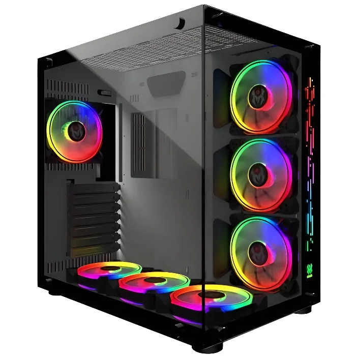
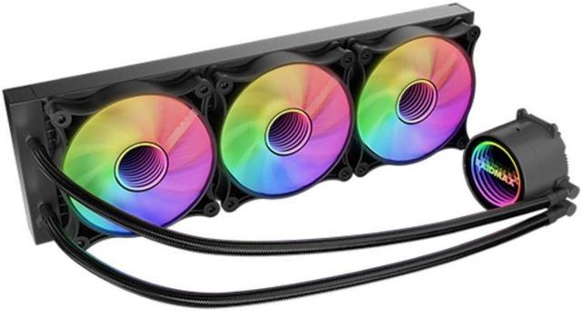

Les Composants Essentiels d'un PC
1. Processeur (CPU)

Le cerveau de l'ordinateur. Il exécute les instructions des logiciels et gère les calculs.
2. Mémoire vive (RAM)

Stocke temporairement les données utilisées par le système et les applications en cours d'exécution.
3. Carte mère

La pièce centrale qui connecte tous les composants entre eux (CPU, RAM, carte graphique, stockage, etc.).
4. Carte graphique (GPU)


Spécialisée dans le traitement des images, vidéos, jeux et logiciels de création graphique.
5. Disque dur / SSD

Le système de stockage des données et du système d’exploitation. Le SSD est plus rapide que le disque dur classique.
6. Alimentation (PSU)

Fournit l’électricité nécessaire au bon fonctionnement de tous les composants.
7. Boîtier

Contient et protège tous les composants du PC. Il influence aussi le refroidissement et l’esthétique.
8. Système de refroidissement

Ventilateurs ou systèmes de refroidissement liquide pour éviter la surchauffe des composants.